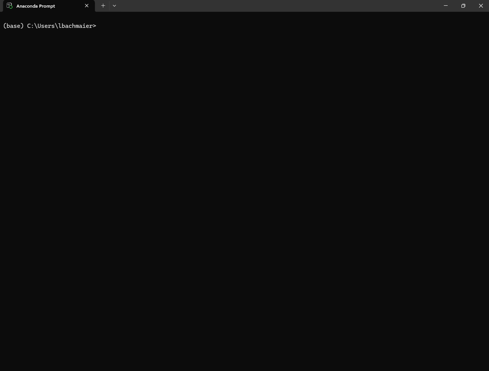
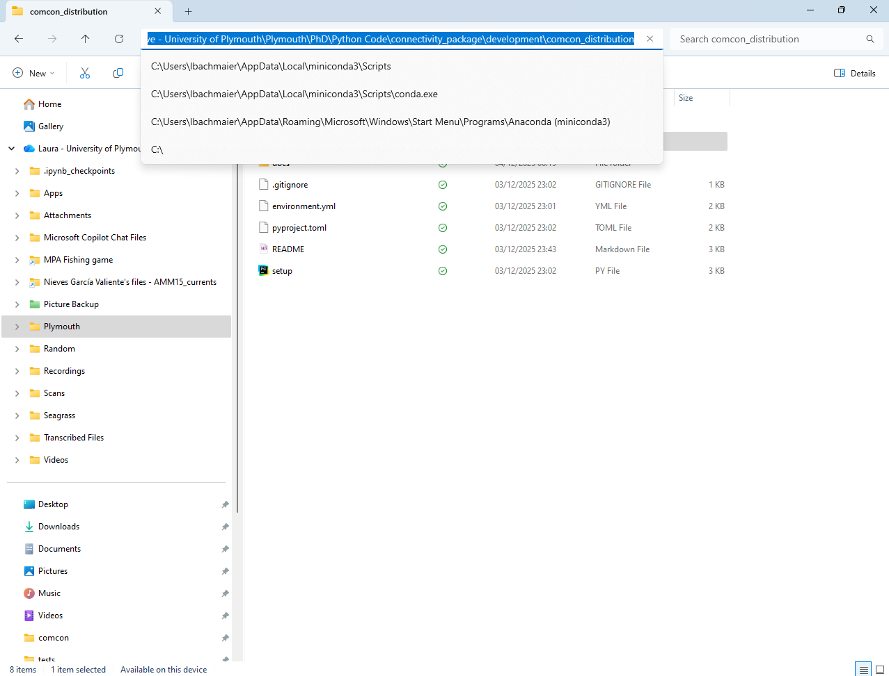
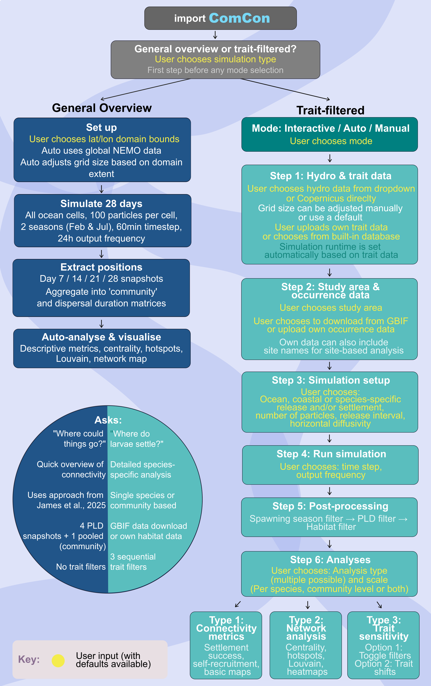

ComCon User Guide
Community Connectivity Package for Marine Larval Dispersal Modelling
Version 1.0 - May 2026
Guide Overview
Marine connectivity modelling has become an essential tool in ecology and conservation biology, helping us understand how marine populations are connected through larval dispersal. These models simulate how larvae (the early life stages of marine organisms) are transported by ocean currents from where they are released to where they eventually settle.
This guide will take you through the step-by-step process of using the ComCon package to run passive, single and multi-species connectivity models for your study region. You don't need any prior programming experience. This guide assumes you're starting from scratch.
By the end of this guide, you will be able to:
- Install and set up the ComCon package on your computer
- Understand the basic concepts of larval dispersal modelling
- Run a complete dispersal simulation and connectivity analysis for multiple species
- Interpret the outputs and connectivity metrics
- Troubleshoot common issues
Guide Structure
- Part 1: Getting Started: Installation and Setup
- Part 2: Introduction to the ComCon Workflow
- Part 3: Running Your First Model using the Passive Pathway
- Part 4: Running a Trait-Defined Model using Interactive Mode
- Part 5: The 6-Step Workflow Explained (Trait-Defined Pathway)
- Part 6: Understanding Your Outputs
- Part 7: Preparing Your Own Data
Quick Tips Before You Start
At a Glance: Initial Setup vs. Every Session
This table along with detailed step-by-step instructions for resuming a project can be found in Returning to a Started Project. Use this quick reference to see what you do once versus every time you sit down to work.
| Action | When |
|---|---|
| Install Miniconda | Once only. Already done if you followed Part 1. |
Create the comcon environment (conda env create -f environment.yml) | Once only. The environment and all its packages remain on your computer. |
Install ComCon (pip install -e .) | Once only (unless you receive an updated version). |
Activate the environment (conda activate comcon) | Every time you open a new terminal window. |
Navigate to your folder (cd path/to/comcon_distribution) | Every time you open a new terminal window. |
Launch Jupyter Lab (jupyter lab) | Every time you want to use ComCon. |
Run import comcon | Every time you start a new notebook session or restart the kernel. |
[default: 7], pressing Enter will use 7. This makes it easy to quickly run through the workflow with sensible defaults.
Basic Code Concepts
While ComCon is designed so you don't need programming knowledge, understanding a few basic concepts will help you follow along:
| Concept | What It Means |
|---|---|
Hash key # |
Across many computing languages such as R and Python, lines starting with # are comments nestled within code. This allows users to include explanatory notes alongside lines of code that the computer ignores. You'll see these throughout code examples. |
Equals sign = |
The = sign assigns a value to a named variable. Think of it as giving a name to a piece of information so you can use it later. For example: study_extent = [-6.0, -2.0, 49.5, 51.5] |
function() |
Words followed by parentheses are functions which perform specified actions. The parentheses may contain inputs the function needs such as saved parameters. For example: download_hydrodynamic_data(**hydro_params). This is a function that you will use during the ComCon workflow to download hydrodynamic data and it uses the parameter hydro_params to tell the function what type of hydrodynamic data to download. |
| Running a cell | In Jupyter, press Shift + Enter to run the current cell. The code executes and moves to the next cell. Alternatively, you can press ▶ at the top of the webpage to run a cell. |
Cell Loading [*] |
In Jupyter, this [*] is shown next to a specific code cell after running it and indicates that the cell is currently running. Once finished with the operation, this will change to [1], or whichever number of cells you have run in your current session. |
Glossary
Before we begin, here are some key terms you'll encounter throughout this guide. You can refer back to this section at any time.
| Term | Definition |
|---|---|
| Advection | The transport of particles by ocean currents. The main driver of larval dispersal. ComCon uses advection algorithms (specifically RK4) to calculate how particles move through the velocity field. |
| AphiaID | A unique identifier for each marine species in the World Register of Marine Species (WoRMS) database. Used to ensure consistent species identification. |
| Betweenness Centrality | A network metric measuring how often a site lies on the shortest path between other sites. High betweenness indicates "stepping stone" sites critical for maintaining long-distance connectivity. |
| Cell | A block of code, or instructions, in Jupyter Lab. You write code in cells and run them one at a time to see results. |
| Closeness Centrality | A network metric measuring how close a site is to all other sites in the network. Sites with high closeness can quickly spread or receive propagules throughout the network. |
| Coastal Cell / Coastal Zone | Grid cells that are adjacent to land. In ComCon, these are the locations where intertidal larvae can be released from and settle at. |
| Community Detection (Louvain) | A method for identifying groups of sites that exchange more larvae with each other than with the rest of the network. ComCon applies the Louvain algorithm to an undirected, weighted version of the connectivity graph. It is undirected because the algorithm reflects mutual exchange or particles between sites (a connection from site A to site B and from B to A are combined into a single connection strength). The graph is also weighted by the number of particles exchanged. |
| Conda | A package and environment manager for Python. It helps install software and manage different "environments" with different packages. |
| Connectivity Hotspot | A site that ranks highly across multiple connectivity metrics. Hotspots are priority sites for conservation as they play important roles in maintaining population connectivity. |
| Connectivity Matrix | A table showing the number or proportion of propagules that successfully disperse from each source (y-axis) location to each sink (x-axis) location. |
| Connectivity Strength | The number of particles (propagules) successfully dispersing between two sites. Higher values indicate more individual connections. |
| Degree Centrality | A network metric counting the number of direct connections a site has. High degree sites are connected to many other locations. |
| Diffusivity | A parameter that controls how much random "spreading" particles experience beyond the main current flow. Represents small-scale turbulence. |
| Directed Graph | Describes a network where each connection has a direction: a link from site A to site B is distinct from a link from B to A. ComCon's connectivity network is directed because propagules travel from a source site to a sink site, so source strength (out-going) and sink strength (in-coming) are tracked separately. |
| Environment | A self-contained space on your computer with its own set of installed packages. Different projects can have different environments to avoid conflicts. |
| FieldSet | An OceanParcels object that contains all the velocity field data (ocean currents) needed to track particles. It includes the U (east-west) and V (north-south) velocity components, plus any additional fields like land masks or diffusivity. ComCon creates this automatically from your hydrodynamic data. |
| GBIF | Global Biodiversity Information Facility. A database of species occurrence records from around the world. ComCon can download occurrence data directly from GBIF. |
| Grid | A regular array of points covering your study extent. Think of it like graph paper laid over a map. Each square is a grid cell. The grid spacing (resolution) determines how detailed your analysis is. ComCon uses the native hydrodynamic resolution for particle advection, but offers the option to use a coarser grid for release and settlement sites to improve computational efficiency on large domains (see Grid Auto-Scaling). |
| Grid Cell | A single square within the grid, representing one geographic location. Each grid cell has coordinates (latitude/longitude) and contains data values like current speed and direction. Release sites and settlement sites are defined at the grid cell level. Not to be confused with a Jupyter notebook "cell" which is where you write code. |
| Grid Resolution | The size of each grid cell, typically expressed in degrees (e.g., 1/12° ≈ 9km) or kilometres. Higher resolution (smaller cells) captures more detail but requires more computational resources. |
| Grid Scaling | A ComCon feature that recommends a coarser grid resolution for release and settlement sites when the study domain is large, to reduce computational cost. Particle advection always runs on the full native-resolution hydrodynamic grid. If grid-scaling is applied, only the release and settlement sites are affected. A coarser release/settlement grid means fewer sites, fewer particles and faster simulations, but less spatial detail in the connectivity results. You can choose the recommended, native or a custom resolution. For site-based analyses you can usually choose the native (finest) resolution rather than the coarser default, because only your study sites release particles, so far fewer are simulated. The native hydrodynamic resolution is the finest available, so two sites can be resolved separately only if they are further apart than one native cell. See Working with your own study sites for details. |
| Hydrodynamic Data | Data describing ocean current velocity. How fast and in which direction water moves at different locations and times. ComCon uses NEMO model data from the Copernicus Marine Service. The user can select the model they would like to use and for which hydrodynamic extent. |
| Hydrodynamic Extent | The geographic area covering the entire marine area in which you want to allow your propagules to disperse. This should be much larger than your area of connectivity interest. |
| Jupyter Lab | An interactive computing environment where you run Python code in "cells" and see results immediately. It's like a digital notebook and serves as a user-friendly interface. |
| Kernel (Jupyter) | The computational engine that runs your Python code in Jupyter Lab. Think of it as the "brain" behind your notebook. When you run a cell, the kernel executes the code and returns the result. Key actions: Restart Kernel (Kernel menu → Restart Kernel) clears all variables and starts fresh. This is useful when something goes wrong or you want to re-run from scratch. Interrupt Kernel (Kernel menu → Interrupt Kernel, or the ■ stop button) stops a currently running cell. This is useful if a simulation is taking too long or you made a mistake. After restarting the kernel, you need to re-run all your cells from the top (re-import ComCon, re-enter parameters, etc.). |
| Kernel (OceanParcels) | Not to be confused with the Jupyter kernel. In OceanParcels, a "kernel" is a set of rules defining how particles behave during the simulation. For example, how they move with currents (advection), how they interact with land (boundary conditions) and how distance is tracked. ComCon creates these automatically. |
| Lagrangian Particle Tracking | A method of simulating dispersal by tracking individual particles (representing propagules) as they move through the ocean. Each particle follows the ocean currents from its release point. |
| Lazy Loading | A technique where data is accessed on-demand from a remote server rather than downloading the entire dataset first. ComCon uses lazy loading by default for hydrodynamic data meaning it streams ocean current data directly from the Copernicus Marine Service as needed during the simulation. This means you do not need to download gigabytes of data to your computer. The optional "export to file" feature downloads a local copy for offline use but this is not required to run your analysis. |
| Mask | A filter that identifies which grid cells belong to different categories (land, ocean, coast). ComCon creates masks automatically from the hydrodynamic data to ensure particles stay in the water and can only settle in appropriate locations. |
| Mortality Rate | The proportion of released particles that fail to settle. Calculated as: 1 - settlement rate. |
| NEMO | Nucleus for European Modelling of the Ocean. A modelling platform ocean circulation model that provides the current data used in dispersal simulations. |
| NetCDF | A file format commonly used for storing scientific data, particularly oceanographic and climate data. The hydrodynamic data from Copernicus can optionally be saved in NetCDF format (.nc files) or Zarr format (.zarr files, see below). Note: You do not need to download the data to run ComCon. It streams data directly from Copernicus by default (see Lazy Loading). |
| OceanParcels | The underlying Python framework that ComCon uses to track particles through ocean current fields. It handles the physics of particle movement. |
| Parquet | A file format ComCon uses behind the scenes to store large trajectory datasets efficiently on disk during a simulation. You do not need to interact with these files directly. ComCon reads from them automatically, which is what lets you re-analyse results later without re-running the simulation. |
| Particle | A virtual point in the simulation representing a computational unit used to sample possible dispersal pathways. Particles are released at specified locations and tracked as they drift with ocean currents. The number of particles per site is a statistical sampling parameter, not a count of individual propagules. More particles give more robust connectivity estimates. See also: Propagule. |
| ParticleSet (pset) | An OceanParcels object containing all the virtual particles to be simulated. It stores each particle's position, release time, species assignment and custom variables (like distance travelled). ComCon creates this in Step 3 based on your release sites and particle settings. |
| Planktonic Larval Duration (PLD) | The time a larva, or propagule, spends drifting in the water column before it becomes competent to settle. Different species have different PLDs, typically ranging from days to months. |
| Potential Connectivity Sites | The number of grid cells where connectivity could occur. If using species-specific release/settlement, this is the count of cells with at least one species' occurrence datapoint. If using "all sites", this equals the total number of coastal cells in your study extent. |
| Propagule | Any dispersing life stage of an organism. In marine contexts, typically larvae, eggs or spores. In ComCon, propagule refers to the biological entity being modelled, while a single particle may represent many propagules. See also: Particle. |
| Python | A programming language commonly used in scientific computing. You don't need to know Python to use ComCon. The package handles the programming for you. Think of it as the language that ComCon is written in. |
| Realised Connectivity Sites | The number of sites that actually contribute to overall network connectivity (i.e., at least one successfully settled particle arrived at or departed from the site in the simulation results). This is always less than or equal to potential connectivity sites. |
| Self-Recruitment | When particles (propagules) settle at their own release site. A settlement buffer can be applied during post-processing, where each particle which settled at a nearby site is attributed to its nearest real site. In network analysis, self-recruitment appears as self-loops on the diagonal of the connectivity matrix. Note that self-recruitment is only counted where a site is both a release and a settlement site, and if your release and settlement sets do not overlap it is zero by construction, so include the relevant sites in both if local retention matters for your question. |
| Self-Recruitment Rate | The proportion of settled particles whose settlement site is their own release site. High self-recruitment indicates self-sustaining populations, while low values indicate dependence on external sources. |
| Session / Working Environment | A session refers to the period from when you start Jupyter Lab to when you close it. All variables, data and results exist only during your session. If you restart the kernel or close Jupyter Lab, you lose any unsaved work. This is why ComCon saves parameter files (JSON) so that you can reload your settings in a new session without re-entering everything. |
| Settlement | The process by which larvae transition from their planktonic phase to their benthic (bottom-dwelling) phase, attaching to suitable habitat. |
| Settlement Rate | The proportion of released particles that successfully settle in suitable habitat. Calculated as: settled particles ÷ released particles (a value between 0 and 1, as stored in the exported CSV). |
| Sink Site | A location that receives propagules from other sites. Sink sites depend on immigration for population replenishment. |
| Sink Strength | A measure of how many particles a site receives from other locations. Strong sink sites depend heavily on immigration from other populations. |
| Source Site | A location that exports propagules to other sites. Strong sources release many propagules that successfully settle elsewhere. |
| Source Strength | A measure of how many particles a site exports to other locations. Strong source sites are important for replenishing downstream populations. |
| Spawning Window | The period of time during which a species releases larvae into the water. This is typically seasonal and varies between species. |
| Study Extent | The geographic area covering your sites of interest in your study, defined by minimum and maximum latitude and longitude coordinates. The domain must be within the coverage of the hydrodynamic data. |
| Terminal | A text-based interface that lets you interact with your computer by typing commands instead of clicking with a mouse. It is what you will use to install ComCon. |
| Timestep | The interval at which particle positions are calculated during the simulation. Smaller timesteps are more accurate but slower. ComCon typically uses timesteps of minutes to hours. The output interval (how often positions are saved) can be different from the computational timestep. |
| Trajectory | The path a particle takes through the ocean during the simulation. Trajectories are recorded as a series of positions over time, showing where the particle was at each timestep. Trajectory data is stored in the simulation output file and used to calculate connectivity. |
| Undirected Graph | Describes a network where connections have no direction: a link between site A and site B is treated as a single mutual connection regardless of which way propagules travelled (A to B and B to A are combined into one connection strength). ComCon converts the connectivity network to an undirected, weighted graph for Louvain community detection. |
| Weighted | Describes a network where each connection carries a value (its weight). In ComCon the weight is the number of particles (propagules) exchanged between two sites, so stronger connections count for more in the network metrics and in community detection. |
Part 1: Getting Started
What is ComCon?
ComCon (Community Connectivity Package) is a Python package designed to make multi-species marine connectivity modelling accessible to researchers without extensive programming experience. It combines:
- OceanParcels - for Lagrangian particle tracking
- NEMO hydrodynamic data - from the Copernicus Marine Service
- Species trait data - spawning windows and planktonic larval durations
- Network analysis tools - to identify connectivity patterns and hotspots
The package guides you through a 6-step workflow, handling the technical complexity while giving you control over the biological parameters that matter for your research.
Why Use ComCon?
- Multi-species: Model entire communities
- Trait-defined filtering: Apply species-specific spawning windows, PLDs and habitat preferences
- Automated data download: Downloads hydrodynamic and occurrence data for you
- Comprehensive outputs: Connectivity matrices, network metrics and visualisations
- No coding required: Interactive prompts guide you through each step
Installing Conda (Miniconda)
Before we can use ComCon, we need to install a tool called Conda. Conda is a package manager that helps us install Python and all the necessary libraries.
Step-by-Step Installation
1. Download Miniconda
Visit the Miniconda download page: https://www.anaconda.com/download
Click on Get Sarted and create a free account with Anaconda.
Once you have set up your account you should see the option to Choose Your Download. Select the Miniconda installer for your operating system:
- Windows: Download "Windows 64-Bit Graphical Installer"
- macOS: Download "64-Bit (Apple silicon) Graphical Installer
- Linux: Download "64-bit (x86) Installer"
2. Run the Installer
- Double-click the downloaded .exe file
- Click "Next" through the welcome screen
- Accept the license agreement
- Select "Just Me" when asked who to install for
- Keep the default installation location (or choose your own, just keep in mind it will have to be installed to an empty folder)
- Important: On the "Advanced Installation Options" screen, check both boxes:
- "Create shortcuts (supported packages only)"
- "Register Miniconda3 as my default Python"
- Click "Install" and wait for completion
3. Verify Installation
In order to verify the installation, we will need to open up a Terminal.
What is a Terminal?
A terminal (also called a command prompt or command line) is a text-based way of talking to your computer. Instead of clicking buttons and icons, you type commands and press Enter to run them. It looks like a plain text window, usually with a dark or white background and a blinking cursor waiting for you to type something.

An Anaconda Prompt Terminal
How to Open the Anaconda Prompt (Windows)
On Windows, you will use the Anaconda Prompt, which is a terminal that was installed with Miniconda. Here is how to find it:
- Click the Windows Start button (the Windows icon in the bottom-left corner of your screen or press the Windows key on your keyboard)
- Start typing Anaconda Prompt. You should see it appear in the search results as you type
- Click on Anaconda Prompt to open it
A black window will open with text that looks something like this:
(base) C:\Users\YourName>
The (base) at the start tells you that Conda is working and you are in the default environment. The blinking cursor after the > is where you type your commands.
How to Open the Terminal (macOS)
- Press Cmd + Space to open Spotlight Search (or click the magnifying glass icon in the top-right corner of your screen)
- Type Terminal and press Enter
A window will open with a command line. If Miniconda was installed correctly, you should see (base) at the start of the line, just like on Windows.
Now, to check we have installed conda properly, open your terminal and type:
conda --versionconda 24.x.x (the numbers may vary)
Navigating with the Terminal
Before installing ComCon, you need to understand a few basic terminal commands. You will use these throughout the setup process and whenever you launch ComCon.
What Does cd Mean?
cd stands for "change directory". It tells your terminal to move into a different folder. Think of it like double-clicking a folder in File Explorer or Finder, but using text instead of your mouse.
| Command | What It Does |
|---|---|
cd folder_name |
Move into a subfolder |
cd .. |
Move up one level (to the parent folder) |
cd /full/path/to/folder |
Move to a specific location using the full path |
pwd (macOS/Linux) or cd alone (Windows) |
Show the current directory you are in |
How to Get a File Path
Throughout ComCon, you may need to provide file paths (locations of files on your computer). Here's how to find them:
Windows:
- Navigate to the file in File Explorer
- Click on the address bar at the top (it will highlight)
- Copy the path (Ctrl + C)
- In ComCon, paste the path when prompted
macOS:
- Navigate to the file in Finder
- Right-click the file and hold Option
- Select "Copy [filename] as Pathname"
/) in file paths, not backslashes (\). If you copy a path from File Explorer, you may need to change \ to /. Alternatively, put an r before the path string: r"C:\Users\Laura\Documents"

How to easily copy and paste file paths for the entire workflow
Installing ComCon
In this section you'll set up your ComCon folder, create the ComCon environment and install ComCon itself. You should have received a folder called comcon_distribution (either as a ZIP file or shared folder).
1. Locate the ComCon folder
If you received a ZIP file, first unzip it:
- Windows: Right-click the ZIP file → "Extract All..." → Choose a location (e.g., Documents)
- Mac: Double-click the ZIP file to unzip it
.zarr format) which consist of many small files that sync services try to
upload individually. If you experience unexpected file errors, try moving your project
folder to a local directory (e.g., C:\Users\YourName\Documents\ on Windows
or /Users/YourName/Documents/ on Mac).
comcon_distribution containing pyproject.toml and environment.yml. When downloading the folder, some extractors create a folder inside a folder of the same name (e.g. comcon/comcon/). If you see that, move the inner folder up one level or simply point your directory (cd) into the inner one, so that pyproject.toml sits directly in the folder you run pip install -e . from. import comcon will fail if you are one level too high or too low as it cannot find the install instructions.
2. Navigate to the folder in your terminal
Open your terminal (Anaconda Prompt on Windows, or Terminal on Mac/Linux), then tell it where the ComCon files are using the cd (change directory) command. Adjust the path to where you unzipped the folder.
# Windows example:
cd C:\Users\YourName\Documents\comcon_distribution
# Mac example:
cd ~/Documents/comcon_distribution- Windows: Open the folder in File Explorer, click in the address bar at the top, and copy the path. Then type
cd(with a space) in your terminal and paste the path. - Mac: Drag the folder from Finder into your Terminal window - it will paste the path automatically!
Creating the ComCon Environment
Now we'll create a dedicated environment for ComCon. This is like creating a special workspace with exactly the right tools for the job.
3. Create the environment with all dependencies
Make sure you are inside the comcon_distribution folder (from the previous step), then copy and paste the following command and press Enter:
conda env create -f environment.ymlconda env create- Creates a new conda environment-f environment.yml- Reads the environment name (comcon), the conda-forge channel and the full package list from theenvironment.ymlfile included with ComCon- The packages it installs include:
parcels- Ocean particle tracking enginecartopy- Map plotting librarygeopandas- Geographic data handlingjupyter- Interactive notebook environment
When prompted "Proceed ([y]/n)?", type y and press Enter.
This will take several minutes as Conda downloads and installs all the required packages. You'll see a progress bar.
Preparing transaction: done Verifying transaction: done Executing transaction: done # # To activate this environment, use # # $ conda activate comcon # # To deactivate an active environment, use # # $ conda deactivate
4. Activate the environment
Type the following and press Enter:
conda activate comconYou should see your prompt change to show (comcon) at the beginning. This tells you the environment is active:
(comcon) C:\Users\YourName> ← Windows: The (comcon) means it's working! (comcon) username@computer:~$ ← Mac/Linux version
(comcon) at the start of your prompt, the environment isn't active.
Installing the ComCon Package
5. Install ComCon
Make sure your environment is still activated (you should see (comcon) at the start of your prompt). Then run:
pip install -e .Note: That's a dot at the end! It means "install from the current folder".
Successfully installed comcon-1.0.0
Launching Jupyter Lab
Jupyter Lab is where you'll actually run ComCon. It's an interactive environment where you can write and run code in small chunks called "cells".
What is a Working Directory?
Your working directory is the folder on your computer that Jupyter Lab considers "home" for your current session. This means ComCon will search for any data you will use and any outputs you create during your session, in this folder. When ComCon saves a file to ./projects/MyProject/figures/map.png, the ./ means "starting from the working directory". So the file ends up inside your working directory, in the project subfolder.
comcon_distribution folder. This ensures your working directory is correct and all ComCon file paths work properly.
How to Launch Jupyter Lab
Step 1: Open your terminal (Anaconda Prompt on Windows, Terminal on macOS/Linux)
Step 2: Activate the ComCon environment:
conda activate comconStep 3: Navigate to your ComCon folder using the cd command:
Windows:
cd C:\Users\YourName\Documents\comcon_distributionmacOS/Linux:
cd /Users/YourName/Documents/comcon_distribution- Windows: Open File Explorer, navigate to your comcon_distribution folder, click the address bar at the top and it will show the full path. Copy it.
- macOS: Open Finder, navigate to the folder, right-click the folder while holding Option, and select "Copy as Pathname".
Step 4: Launch Jupyter Lab:
jupyter labJupyter Lab Guide
Before running ComCon, let's learn the basics of Jupyter Lab. This will help you navigate the interface and run code effectively.
The Jupyter Lab Interface
- File Browser (left panel): Shows files in your current directory. You can navigate folders here.
- Launcher (main area): When you first open Jupyter Lab, you see the Launcher. Click "Python 3" under "Notebook" to create a new notebook.
- Notebook tabs: Open notebooks appear as tabs at the top.
- Cells: The boxes where you write code. Each cell can be run independently.
Creating a New Notebook
- Click "Python 3 (ipykernel)" under the "Notebook" section in the Launcher
- A new notebook will open with one empty cell
- Right-click the "Untitled.ipynb" tab and select "Rename Notebook"
- Give it a meaningful name like "ComCon_Analysis.ipynb"
Running Code in Cells
There are several ways to run code your code. First click on the cell you want to run first. Then choose one of the following:
- Ctrl + Enter (Windows) or Cmd + Enter (Mac): Run the current cell and stay on it
- Shift + Enter: Run the current cell and move to the next one
- Click the "Play" button (▶) in the toolbar
[default: X], you can simply press Enter to accept the default value. This is useful when you want to use the recommended settings.
Adding New Cells
- Press B (when not editing a cell) to add a cell below
- Press A (when not editing a cell) to add a cell above
- Or click the "+" button in the toolbar
Running ComCon step by step
Depending on the mode, ComCon may need you to create a new cell as you work your way through the steps. The package prints a highlighted blue box that begins with ▶ To begin or ▶ To continue. Each time you see one of these boxes:
- Make a new cell by clicking the + button in the toolbar or clicking just below the current cell and pressing Esc then B.
- Copy and paste the exact line(s) shown in the box into the new cell.
- Run it by pressing Shift + Enter (or the ▶ Run button at the top).
The box looks like this:
from comcon.automatic import *
start_automatic_mode()You will see one of these each time ComCon needs you to run code manually. This occurs when you first choose a pathway/mode and again after each step of the Interactive workflow. That's it.
[*] to its left and a small filled circle at the bottom-right of the Jupyter Lab window. Wait for these to clear before running the next cell. There are several steps in the workflow which can take a long time to finish. This is normal and does not mean anything has frozen.
The Kernel
The kernel is the computational engine that runs your Python code. When you run a cell (press Shift + Enter), the kernel executes the code and returns the result. The kernel remembers all variables and data from previous cells. This is your session.
Key kernel actions (all found in the Kernel menu at the top of Jupyter Lab):
| Action | When to Use | What Happens |
|---|---|---|
| Restart Kernel | Something went wrong or you want to start fresh | All variables and data are cleared. You must re-run all cells from the top. |
| Interrupt Kernel | A cell is taking too long or you made a mistake | Stops the currently running cell. Your data and variables are preserved. |
| Restart and Run All | Re-run the entire notebook from scratch | Clears everything and runs every cell in order. Useful for testing. |
import comcon and all subsequent cells from the beginning. This is why ComCon automatically saves your parameters to JSON files. This allows you to reload them quickly in a new session without re-entering everything.
Sessions
A session lasts from when you start Jupyter Lab (or restart the kernel) to when you close it (or restart the kernel again). Everything you create during a session such as variables, loaded data or simulation results, exists only in your computer's memory until you save it to a file.
This means:
- If you close Jupyter Lab, your variables are gone (but any files ComCon saved to disk are still there)
- If you restart the kernel, you need to re-import ComCon and re-run your cells
- ComCon saves parameters to JSON files automatically, so you can reload them in a new session
Returning to a Started Project
Once you have completed the initial setup (installing Miniconda, creating the environment and installing ComCon), you do not need to repeat these steps every time you use ComCon. The table below clarifies what you need to do once versus every time you sit down to work.
| Action | When |
|---|---|
| Install Miniconda | Once only. Already done if you followed Part 1. |
Create the comcon environment (conda env create -f environment.yml) |
Once only. The environment and all its packages remain on your computer. |
Install ComCon (pip install -e .) |
Once only (unless you receive an updated version). |
Activate the environment (conda activate comcon) |
Every time you open a new terminal window. |
Navigate to your folder (cd path/to/comcon_distribution) |
Every time you open a new terminal window. |
Launch Jupyter Lab (jupyter lab) |
Every time you want to use ComCon. |
Run import comcon |
Every time you start a new notebook session or restart the kernel. |
Step-by-Step: Picking Up Where You Left Off
When you come back to continue working on an existing project, here is exactly what to do:
- Open the Anaconda Prompt (Windows) or Terminal (macOS/Linux)
- Activate the environment:
conda activate comcon - Navigate to your ComCon folder:
cd path/to/comcon_distribution - Launch Jupyter Lab:
jupyter lab - Open your existing notebook from the file browser on the left
- In the first cell, run:
import comcon - Continue from where you left off. When you run a workflow step, ComCon will detect your saved parameter files and offer to reuse them.
workflow_step(1) again, ComCon will find your
saved hydrodynamic_parameters.json file and ask if you want
to reuse it. Say "yes" and you are back where you left off. The same
applies to species occurrence parameters in Step 2.
A project folder is self-contained, so you can move it between machines (for example via OneDrive). On the new machine, run Step 1, choose option 3 (continue an existing project), and point ComCon at the moved folder. ComCon rebuilds its file paths from wherever the folder now lives, so you do not need to keep it in the same location.
import comcon and your
workflow steps from the beginning. However, ComCon will detect your
previously saved files and offer to reload them, so this is usually
quick. Any files already saved to disk (figures, CSVs, simulation
output) are not affected by a kernel restart.
- You receive a new version of ComCon, navigate
to the new folder, activate your environment, and run
pip install -e .again - A major package update is required (e.g., a new
version of OceanParcels), in this case, it is safest to delete
the old environment (
conda remove -n comcon --all) and recreate it from scratch following the original instructions - You move to a new computer, the full setup (Miniconda, environment, ComCon) needs to be done once on each machine
How ComCon Organises Your Files
At the start of every analysis (the first thing in Step 1, before you select your data source), ComCon asks you to set up a project directory. This is the folder where all outputs for this analysis will be saved. You have three options:
Option 1: Create a ComCon Project Folder (Recommended)
ComCon asks you for a project name and creates a structured folder inside projects/ in your working directory. This folder will be given an automatic name with the mode, date and time included to create a unique folder name for each analysis. All outputs are automatically saved into the correct subfolder:
comcon_distribution/
└── projects/
└── MyProject/
├── config/: Saved parameter files (.json)
├── hydro_data/: Exported hydrodynamic data
├── occurrence_data/: Cleaned species occurrence data
├── grids/: Release and settlement grids
├── simulation/: Raw trajectory output (.zarr) and processed chunks (.parquet)
├── figures/: All saved maps and plots
└── results/: Connectivity metrics and network analysis CSVs| Subfolder | What Goes Here | Created By |
|---|---|---|
config/ |
Saved parameter files (.json) so you can reload settings |
Steps 1 and 2 |
hydro_data/ |
Exported hydrodynamic data (if you choose to download rather than stream) | Step 1 (if you choose to download) |
occurrence_data/ |
Cleaned species occurrence data | Step 2 |
grids/ |
Release and settlement grid CSVs | Step 3 |
simulation/ |
Raw trajectory output (simulation_output.zarr) and processed trajectory chunks (chunk_*.parquet) |
Step 4 |
figures/ |
All saved maps and plots | Steps 2, 5, 6 |
results/ |
Connectivity metrics and network analysis CSVs | Step 6 |
Option 2: Use Your Own Directory (Advanced Users)
If you prefer to organise your files differently or want to save outputs to a specific location (e.g. an external drive, a shared network folder or an existing project folder), you can choose "Use your own directory" during project setup.
When you choose this option, ComCon will ask:
- The path to your directory (ComCon will create it if it does not exist)
- Whether to create ComCon subfolders inside it
- Yes (default): Creates the same
config/,hydro_data/,figures/(etc.) subfolders inside your directory - No: All outputs are saved directly into your directory with no subfolders (flat structure)
- Yes (default): Creates the same
Select option (1/2) [default: 1]: 2 Enter the path to your directory: D:\Research\Channel_2024 Create ComCon subfolders inside this directory? (yes/no) [default: yes]: yes Project directory created: D:\Research\Channel_2024 Subfolders: config, hydro_data, occurrence_data, grids, simulation, figures, results
- You already have a project folder structure you want to keep
- You want to save outputs to a different drive or location
- You are integrating ComCon into an existing analysis pipeline
- You are using Manual Mode and want full control over file paths
project = setup_project_directory(). If you do not set up a project directory, output paths will default to ./outputs in your working directory.
Option 3: Continue an Existing ComCon Project
If you have already run part of an analysis and saved it, choose this option to point ComCon back at an existing project folder. ComCon reads the saved parameter files in that folder's config/ subfolder, so you do not have to re-enter settings you have already chosen. If the folder also contains a saved session checkpoint, ComCon tells you how to resume exactly where you left off (see Saving and Resuming Your Work) rather than repeating the workflow steps.
When Does Project Setup Happen?
Project setup is the first thing that happens when you begin a new analysis:
- Interactive Mode: At the start of Step 1, before you select your hydrodynamic data source
- Automatic Mode: the Project Setup section of the parameter collection (the very first prompt)
- Manual Mode: Call
setup_project_directory()whenever you want, or skip it entirely and provide your own paths to each function
Once set up, your project directory is remembered for the rest of the session. All default file paths throughout the workflow will point to the appropriate subfolder in your project directory. You can always override these defaults by typing a different path when prompted.
What If Something Goes Wrong with File Paths?
If you see errors like FileNotFoundError or No such file or directory, it almost always means one of these:
- Wrong working directory: You launched Jupyter Lab from the wrong folder. To verify your working directory, go to the Terminal and run:
- Typo in path: Check for typos, especially backslashes vs forward slashes
- File does not exist yet: Make sure you have run the earlier workflow steps first
import os
print(os.getcwd())comcon_distribution (or whatever you named your folder). For example: /Users/Laura/Documents/comcon_distribution
jupyter lab without first navigating to the correct folder using cd, Jupyter Lab will open in your home directory (e.g., C:\Users\YourName). ComCon will then not be able to find its files and will produce errors. Always cd first.
/Users/Laura/Desktop/my_data.csv).
/Users/Laura/Desktop/my_data.csv or /Users/Laura/Desktop/my_data will work.
Part 2: Introduction to the ComCon Workflow
Before running anything, it helps to see how ComCon fits together. The workflow has two pathways, and the trait-defined pathway can be run in three modes. The flowchart below shows the whole picture. The sections that follow walk through each piece.

Choosing a Pathway and Mode
The two pathways
- Passive dispersal pathway: The simplest way in. You provide only a study extent and ComCon runs a 28-day summer (July) and winter (February) simulation releasing particles from all ocean cells, then extracts connectivity at 7, 14, 21 and 28 days. No species or trait data is required, ideal for a general first look at dispersal in your region. Follows James et al. (2025). See the Passive Dispersal Pathway section for full details.
- Trait-defined pathway: The complete species-specific workflow. You supply species traits (pelagic larval duration, spawning window, habitat) and ComCon filters dispersal accordingly to assess community and per-species connectivity patterns. This is the pathway used for the 6-step workflow in Part 5.
The three modes (trait-defined pathway)
The trait-defined pathway has three modes available which differ only in how hands-on you want to interact with ComCon. All three produce the same results from the same settings:
| Mode | Best For | Description |
|---|---|---|
| Interactive Mode | First-time users, exploring data | Guides you step-by-step with explanations and visualisations at each stage. You can pause, review and edit parameters between steps. |
| Automatic Mode | Repeat analyses, batch processing | Collects all parameters upfront, then runs the entire workflow automatically. Great when you know what settings you want. |
| Manual Mode | Custom workflows, advanced users | Access individual functions to build custom pipelines. Useful for re-running specific analyses or integrating into existing code. |
Importing ComCon
With everything installed, we're ready to start using ComCon! In your Jupyter notebook, create a new cell and type:
import comconPress Ctrl + Enter (or Cmd + Enter on Mac) to run the cell.
You should see the ComCon logo appear, followed by a welcome message and a dropdown menu to select your mode.
- Make sure you activated the comcon environment before launching Jupyter Lab
- Try restarting the kernel (Kernel menu → Restart Kernel)
- Check the Troubleshooting section
For your very first run, try the passive dispersal pathway. It needs only a study extent (latitude/longitude) and gives a quick overview of dispersal in your region with no trait setup. When you're ready to model specific species, switch to the trait-defined pathway in Interactive Mode, which walks you through each step.
Part 3: Running Your First Model using the Passive Pathway
The passive dispersal pathway (Pathway 1) provides a quick hydrodynamic overview of your study extent without requiring species-specific trait data. It follows the approach described in James et al. (2025).
When to Use the Passive Pathway
- As an exploratory first step to understand general dispersal patterns before investing time in the full trait-defined workflow
- When you want a quick comparison of summer vs winter dispersal and a range of 4 possible PLDs
- When species trait data is unavailable or uncertain
- To identify connectivity barriers and corridors at a broad hydrodynamic level
How It Works
The passive pathway runs 28-day simulations for both summer (July) and winter (February), following James et al. (2025). Particles are released from all ocean cells within the study extent and connections are extracted at fixed timepoints (7, 14, 21, and 28 days) to represent a range of dispersal capabilities.
What the User Provides
- Latitude and longitude bounds of the study extent
- A project folder name
- Copernicus Marine Service credentials (first run only, saved for future use)
What Is Set Automatically
- Hydrodynamic dataset and grid resolution (auto-scaled by domain size)
- Simulation time window (February for winter, July for summer)
- Number of particles, runtime, timestep and horizontal diffusivity
- All analysis parameters
Running the Passive Pathway
from comcon.passive import *
passive_dispersal_pathway()The pathway runs end-to-end with minimal user input and produces the following outputs for both summer and winter:
Outputs
- Land mask visualisation: Native and (if applicable) binned resolution maps showing ocean, coastal and land cells
- Summary statistics: Settlement rates, dispersal distances and network metrics for each timepoint
- Connectivity matrices: Source × destination matrices at each timepoint (7, 14, 21, 28 days) and pooled across timepoints
- Network maps: Networks maps and top 10 hotspot maps showing a range of connectivity metrics
- Community detection: Louvain community maps showing functionally connected groups of sites
Datasets Produced
The passive pathway produces 15 datasets in total:
- 8 raw datasets (4 timepoints × 2 seasons)
- 4 timepoint-pooled datasets (pooled across seasons for each timepoint)
- 2 season-pooled datasets (pooled across timepoints for each season)
- 1 fully pooled dataset (all timepoints and seasons combined)
Part 4: Running a Trait-Defined Model using Interactive Mode
This walks through running a species-specific model in interactive mode, the guided, prompt-by-prompt way to use the trait-defined pathway. (For the simpler trait-free first run, see Part 3.)
Starting Interactive Mode
After selecting Interactive Mode and clicking Start, you'll see instructions to begin the workflow. In a new cell, type:
from comcon.interactive import *
workflow_step(1)Press Ctrl + Enter to run the cell. This begins Step 1 of the workflow.
How Interactive Mode Works
- Text prompts: ComCon will ask you questions. Type your answer and press Enter
- Default values: Shown in square brackets like
[default: 1]. Press Enter without typing anything to use the default - Choices: Often shown as numbered options (1, 2, 3...). Type the number and press Enter
- Yes/No questions: Type
yesorno(or justyorn) and press Enter
Part 5: The 6-Step Workflow
The ComCon workflow consists of 6 main steps. Each step builds on the previous one, taking you from raw data to connectivity analysis outputs.
- Hydrodynamic and Trait Data - Load ocean current data and species traits
- Species Occurrence Data - Define where species are found
- Simulation Setup - Configure release, settlement and particle parameters
- Execute the Simulation - Run the dispersal model
- Post-Processing - Apply species-specific filters
- Connectivity Analyses - Calculate metrics and visualise results
Step 1: Hydrodynamic and Trait Data
In this step, you'll load the ocean current data needed to simulate larval dispersal. The currents drive the particle movement in the model.
What Happens in Step 1
- Load species traits: Select species from the built-in database or provide your own CSV file
- Calculate dispersal period: Determine the simulation timeframe based on spawning windows and PLDs
- Download hydrodynamic data: Get NEMO ocean current data from Copernicus Marine Service
- Grid resolution selection: Choose the resolution for release and settlement sites (see below)
- Visualise the hydrodynamic extent: View land/ocean/coastal masks with your chosen resolution
Grid Resolution for Release and Settlement
After the hydrodynamic data is downloaded, ComCon lets you choose the grid resolution used for release and settlement sites. Particle advection always runs on the full native-resolution hydrodynamic grid. Only the sites where particles are released and settle are affected by this choice.
A coarser grid means fewer release/settlement sites, fewer particles and faster simulations, but less spatial detail in the connectivity results. ComCon recommends a resolution based on your domain size and shows you a grid summary with native and (if applicable) binned ocean and coastal cell counts.
For small domains, the native resolution is typically recommended. For large domains (e.g., Mediterranean-wide studies), a coarser grid significantly reduces computation time while preserving meaningful connectivity patterns.
Species Trait Data
Species traits tell the model when each species spawns and how long larvae remain in the plankton. You can:
- Option 1: Select species from the built-in database (covers common intertidal species)
- Option 2: Provide your own CSV file (see Section: Species Traits CSV Format)
Built-in Traits Database
ComCon includes a built-in species trait database covering approximately 25 to 30 common intertidal and shallow subtidal species found in the North East Atlantic. The database provides spawning seasonality (start and end months) and planktonic larval duration (minimum and maximum PLD in days) for each species.
Trait values were compiled from peer-reviewed literature and the Marine Life Information Network (MarLIN). Where published values varied between studies or geographic regions, ranges were chosen to represent typical conditions for UK and NE Atlantic populations. Not all data is specific to the NE Atlantic however as data is limited.
- PLD estimates are approximate. Larval duration varies with temperature, food availability and other environmental conditions. The database provides literature-based ranges, not exact values for your study extent.
- Spawning windows are generalised. Actual spawning timing varies with latitude, local conditions and year-to-year variation.
- Use Type 3 analysis (trait sensitivity) to test how sensitive your results are to uncertainty in these trait values.
Copernicus Marine Service Login
ComCon downloads ocean current data from the Copernicus Marine Service. You'll need a free account.
- Go to https://marine.copernicus.eu/
- Click "Register" and create a free account
- Verify your email address
- When ComCon prompts for login, enter your email and password
Your credentials will be saved locally so you won't need to enter them again.
Choosing Your Study Extent
You'll be asked to define the geographic bounds of your study extent using coordinates:
- Minimum longitude (west): The western boundary
- Maximum longitude (east): The eastern boundary
- Minimum latitude (south): The southern boundary
- Maximum latitude (north): The northern boundary
- Longitude: Negative values = West, Positive values = East
- Latitude: Negative values = South, Positive values = North
- Example for UK waters: Lon: -10 to 2, Lat: 49 to 61
Supported Hydrodynamic Models
ComCon uses ocean current data from the Copernicus Marine Service. The default model is the Global Ocean Physics Analysis and Forecast NEMO configuration (cmems_mod_glo_phy_anfc_0.083deg_PT1H-m), which provides global coverage at approximately 9 km horizontal resolution. Several regional models are also offered in the dataset menu (NW European Shelf at ~1.5 km, Atlantic,Iberian,Mediterranean at ~3 km, and Mediterranean Sea at ~4 km), and you can enter any other Copernicus dataset ID for your region.
| Dataset ID | Coverage | Resolution | Best For |
|---|---|---|---|
cmems_mod_nws_phy-cur_anfc_1.5km-2D_PT1H-i |
NW European Shelf | ~1.5 km, hourly | UK, Ireland, North Sea, Bay of Biscay (forecast, multi-year) |
cmems_mod_glo_phy_my_0.083deg_P1D-m |
Global | ~8 km (1/12°), daily | Studies outside European shelf waters (reanalysis, multi-year) |
cmems_mod_ibi_phy_anfc_0.027deg-2D_PT1H-m |
Iberian-Biscay-Ireland | ~3 km, hourly | Atlantic coast of Europe, Iberian Peninsula (forecast, multi-year) |
cmems_mod_med_phy_my_4.2km-2D_PT1H-i |
Mediterranean Sea | ~4 km, hourly | Mediterranean studies (reanalysis, multi-year) |
cmems_mod_nws_phy-cur_anfc_1.5km-2D_PT1H-i). For other regions, pick one of the listed regional models or browse the Copernicus catalogue and enter a custom dataset ID. ComCon works with any NEMO-format dataset that provides U and V current velocity fields.
Continuing to Step 2
After Step 1 completes, you'll see a message like:
Step 1 completed.
To continue, run in the next cell:
workflow_step(2)Create a new cell and run workflow_step(2) to continue.
Step 2: Species Occurrence Data
This step defines where each species is found within your study extent. Occurrence data is used to determine appropriate release and settlement locations. After the study extent polygon is created, ComCon displays the hydrodynamic extent with your study extent overlaid so you can verify spatial coverage.
Data Source Options
- Option 1: Download from GBIF - ComCon automatically downloads occurrence records for your species from the Global Biodiversity Information Facility
- Option 2: Your own data - Provide a CSV file with species occurrence coordinates (see Section: Occurrence Data CSV Format)
site_name column, ComCon treats those locations as named study sites and labels every figure and CSV with your site names instead of grid IDs. This is entirely optional and needs no separate mode. See Working with your own study sites for details.
Defining the Study Extent Boundary
You can define your study extent boundary using:
- Interactive map: Draw a polygon on a map
- GeoJSON file: Load a pre-defined boundary
- Bounding box: Use the coordinates from Step 1
Creating Land and Coastal Masks
ComCon creates masks to distinguish between:
- Land cells: Where particles cannot go
- Ocean cells: Open water
- Coastal cells: Cells next to land, where shallow-water and intertidal species typically occur
Habitat Filtering
When cleaning your occurrence data, ComCon asks which habitat type your species belong to. This decides which grid cells can become release and settlement sites, and removes occurrence records that fall outside that habitat:
- Coastal: Keeps only coastal occurrences and removes records on land or offshore. Appropriate for littoral and infralittoral species.
- Ocean: Keeps all ocean occurrences (coastal and offshore) and removes records on land. Appropriate for offshore or mixed coastal-and-offshore species.
- None: Uses your data exactly as provided, with no habitat cleaning. Appropriate for data you have already cleaned. The candidate cells are the same as for "ocean". Only the cleaning of your records differs.
Step 3: Simulation Setup
This step configures how particles are released into the simulation and where they can settle. The grid resolution for release and settlement was already selected in Step 1. If the domain was binned, the coarser grid is used for release/settlement while the native resolution is used for particle advection.
Release Strategy
ComCon runs one connectivity analysis. The release strategy only changes which sites particles are released from. Your occurrence data from Step 2 always has a species column, and if it also includes a site_name column those names carry through to all outputs. Choose how particles are released:
- Whole study extent: Release from every cell in your study extent grid (coastal or ocean), regardless of where species occur. Does not use the occurrence data. Best for maximum-dispersal or data-poor scenarios.
- Pooled across species: Release from every occupied site in your occurrence data, combined across all species, so every species is released from all of those sites. Best when you want to release from your sampled sites without splitting by species.
- Species-specific: Release each species only from its own occurrence sites. Best for trait-based analyses.
Settlement Strategy
Choose where particles are allowed to settle. The first three options mirror the release options and use the same Step 2 occurrence data, and the fourth lets you supply a separate dataset for settlement only:
- Whole study extent: Particles can settle at any cell in the study grid, regardless of where species occur.
- Pooled across species: Particles can settle at every occupied site in your occurrence data, combined across all species.
- Species-specific: Each species can settle only at its own occurrence sites.
- A different dataset: Upload a separate occurrence or habitat-suitability CSV (
species, latitude, longitude, optionalsite_name) used for settlement only. You then choose whether it is applied pooled or species-specific, exactly as for the options above.
The pooled and species-specific options appear only when occurrence data is present. The whole-study-extent and different-dataset options are always available.
Particle Parameters
You'll configure:
- Particles per site: How many particles to release from each location (more particles = more accurate but slower)
- Release frequency: How often new particles are released during the spawning window
- Horizontal diffusivity: Small-scale random movement (typical values: 1-100 m²/s)
- Particles per site: 100 for testing, 1,000 to 10,000 for publication-quality runs
- Release frequency: Weekly (good balance between temporal coverage and particle count). Daily releases give finer resolution but produce more particles.
- Diffusivity: 1 m²/s is typical for coastal/shelf seas. Higher values (10 to 100 m²/s) may be appropriate for open ocean or highly turbulent areas.
Step 4: Execute the Simulation
This step executes the actual particle tracking simulation. Particles are released and tracked as they drift with the ocean currents.
What to Expect
- Progress bar: Shows simulation progress
- Memory monitoring: ComCon monitors system memory to prevent crashes
- Runtime: Depends on number of particles and simulation length (minutes to hours)
- Don't close Jupyter Lab or your terminal
- Avoid running other memory-intensive programs
- If your computer goes to sleep, the simulation may pause or fail
Step 5: Post-Processing
After the simulation, this step applies species-specific filters to the trajectory data.
Filtering Steps
- Spawning filter: Keeps only particles released during each species' spawning window.
- PLD filter: Keeps only particles that reach suitable settlement habitat within the species' minimum-to-maximum PLD window. Particles that never reach suitable habitat in that window are treated as mortalities. This step is usually where most trajectories are filtered out.
- Habitat filter: Keeps only particles released from the species' own habitat. In a species-specific run where every species shares the same release sites, this step often removes nothing, which is expected.
Step 6: Connectivity Analyses
The final step calculates connectivity metrics and produces visualisations. Results are displayed in interactive dropdown viewers and can be exported to CSV.
Type 1: Connectivity Metrics
Dispersal statistics at community and per-species level, displayed in an interactive dropdown viewer:
- Total particles released and settled
- Settlement and mortality rates
- Self-recruitment rate
- Mean, min, and max dispersal distance (km)
- Mean, min, and max realised PLD (days)
Type 2: Network Analysis
Treats sites as nodes in a directed connectivity network. Results include interactive viewers for:
- Network summary: Site counts, connection counts, community counts per species and community
- Connectivity matrix: Source × sink of particle exchanges
- Network and Hotspot map: Network maps and maps displaying the Top 10 sites ranked across source, sink, self-recruitment, betweenness, closeness and degree centrality
- Site × metric heatmap: Visual comparison of all six network metrics across sites
- Community map: Louvain community detection showing functionally connected groups
Type 3: Trait Sensitivity Analysis
Compare how different trait values affect connectivity. Requires a temporal buffer to have been set in Step 1:
- PLD modification: Test how increasing or decreasing planktonic larval duration changes connectivity patterns
- Spawning window shift: Test how shifting spawning timing affects which sites are connected
Manual Mode: Running Functions Directly
Manual mode gives you direct access to every ComCon function, for scripting, customisation, or running only part of the workflow. It does not walk you through the steps , instead you call the functions you need, in the order you need them. This is the most flexible mode and the one to use when you want to build your own pipeline or re-run just one stage.
post_process() accepts either a directory of trajectory chunks (the normal, memory-safe route for large runs) or a single in-memory pandas DataFrame of trajectories. If you have simulation output from another source, load it into a DataFrame with the expected columns (trajectory, time, obs, grid_id, lat, lon) and pass it straight to post_process() , no chunking required for smaller datasets.Two built-in helpers orient you:
list_functions(): prints every available function grouped by workflow step, each tagged [I] (interactive, has prompts, run in Jupyter) or [D] (direct , no prompts, safe to script).example_workflow(): prints a complete worked example you can copy and adapt.
Common tasks
Re-run only the analysis on an existing simulation (you already have trajectory output and don't want to re-simulate):
import comcon.manual as cc
# Load previously processed trajectories, then run connectivity analysis
results = cc.run_analysis_only(final_processed, release_grids, settlement_grids, traits,
coastal_grid_df, grid_ids, full_grid_df)
# ...or call the pieces directly:
metrics = cc.calculate_connectivity_metrics(final_processed, release_grids,
settlement_grids, traits, grid_ids=grid_ids)
network = cc.network_analysis(final_processed, release_grids, settlement_grids,
coastal_grid_df, grid_ids, full_grid_df, 30) # final arg = scale (km)Post-process raw simulation output, then export to CSV. Post-processing needs the trajectories in memory, so load them from the on-disk chunks first:
traj = cc.load_traj_from_chunks(chunks_dir)
final_processed = cc.run_postprocessing_only(traj, traits, release_grids,
settlement_grids, grid_ids)
# export_* take an output DIRECTORY (filenames are chosen for you):
cc.export_connectivity_metrics(metrics, "results")
cc.export_network_results(network, "results")Plot a single result directly (run in Jupyter Lab):
cc.create_connectivity_matrix_plot(network['connectivity_matrix'])
cc.create_network_map(network['site_metrics'], network['site_metrics'].head(10),
composite_col='overall_composite')trait_metrics_viewer, network_metrics_viewer, trait_community_viewer) are built for the multi-scale results structure that Interactive and Automatic modes produce , a dict keyed by scale, e.g. {'full_domain': {'community': network}}. In a manual script, the create_* functions above are the simplest way to plot a single result.
Vignettes: Worked Examples
ComCon includes a set of worked example vignettes as Jupyter Notebooks and HTML files. These demonstrate complete workflows from start to finish and are the best way to learn how to use the package. You can find them in the docs/vignettes/ folder.
The Jupyter Notebooks allow you to open the explanatory text directly alongside the code. This means you can simple run each code cell rather than having to input any of your own.
If you prefer to work through the vignettes more hands-on, then choose the HTML file. The content is identical, but in HTML you will have to create your own Jupyter Notebook and add code cells yourself, being able to copy the code from the HTML file.
Available Vignettes
The vignettes are organised into two groups:
Single-Species Vignettes
These three vignettes cover the same analysis: A connectivity study of Patella vulgata (common limpet) in the south-west of England using each of ComCon's three modes. Choose the one that matches your preferred workflow style:
| Vignette | Mode | Best For |
|---|---|---|
1.1_single_species_quickstart_interactive.ipynb |
Interactive | First-time users. Step-by-step guided prompts walk you through each decision. |
1.2_single_species_quickstart_manual.ipynb |
Manual | Users who want reproducible scripts. Direct function calls give you full control. |
1.3_single_species_quickstart_automatic.ipynb |
Automatic | Users who already know what parameters they want. Collects everything upfront, then runs hands-off. |
All three produce identical results. They differ only in how you interact with ComCon. If you are new to ComCon, start with the Interactive Mode vignette.
Multi-Species Vignettes
| Vignette | Analysis Type | What It Covers |
|---|---|---|
2_multi_species_connectivity.ipynb |
Type 2: Network Analysis | Multi-species workflow with three species of contrasting PLDs. Identifies connectivity hotspots at community and per-species levels. |
3_trait_uncertainty_hypothesis_testing.ipynb |
Type 3: Trait Sensitivity | Tests how robust connectivity results are to uncertainty in trait data. Compares a baseline trait model against modified-trait runs, testing PLD and spawning-timing sensitivity. |
Vignettes 2 and 3 use Manual Mode and build on each other. Vignette 3 reuses the simulation output from Vignette 2.
How to Use the Vignettes
- Activate your ComCon conda environment
- Navigate to the
docs/vignettes/folder - Launch Jupyter Lab:
jupyter lab - Open the
.ipynbfile - Run cells sequentially with Shift + Enter
.html files in the same folder if you just want to see the outputs without running the code.
Part 6: Understanding Your Outputs
ComCon produces various outputs saved to your working directory. Here's what each file contains:
Output Files
At any export or output directory prompt, press Enter to open a folder browser and select a location or type a path directly and press Enter to use it.
The table below lists the core outputs, the files produced by every standard run and the ones you will use for interpreting your results. Paths are shown relative to your project folder.
| File/Folder | Description |
|---|---|
simulation/simulation.zarr |
Raw particle trajectory data from the simulation |
results/<label>/<label>_connectivity_summary.csv |
Summary of the connectivity metrics. One file is created per species and one for the community, the <label> prefix identifying which |
results/<label>/<label>_<scale>_network_site_metrics.csv |
Centrality and functional role metrics for each site |
results/<label>/<label>_network_summary.csv |
Network-level summary scalars for each analysis level and scale (number of species, study extent, potential and realised connectivity sites, unique connections). The whole-network companion to the per-site network_site_metrics.csv. |
results/<label>/<label>_<scale>_connectivity_matrix.csv |
Raw particle-exchange counts between every source site (rows) and sink site (columns). The on-screen matrix shows log10 of these counts for clarity (see Connectivity Strength in the Glossary). This file holds the absolute numbers. |
figures/ |
Saved maps and plots, organised into one subfolder per analysis level and scale (e.g. community_full_domain/), containing the hotspot map, network-only map, community map, connectivity matrix, site × metric heatmap and per-metric hotspot maps. |
config/comcon_outputs.xlsx |
A metadata file with a record of the run across four sheets: A list of all outputs (what each file is and whether it was saved), the full run configuration, a Metric Definitions sheet explaining how every reported metric is calculated and a Column Definitions sheet documenting every column in the exported CSVs. Use this alongside your results to interpret and reproduce them. |
results/community/community_trait_sensitivity_<scenario>.csv, only when you run a sensitivity scenario), the saved grid cell lists (grids/grid_full_domain.csv and grid_study_area.csv, when grid saving is enabled), downloaded ocean-current files (hydro_data/, which stays empty unless you choose to save a local copy rather than streaming), saved parameter and session files (config/), the cleaned occurrence table (occurrence_data/), trajectory chunks used during post-processing (simulation/chunks_*/), the dispersal animation (animation/), and the land-mask, occurrence-distribution and trait-sensitivity figures.
For a complete list of what your run produced, open the Outputs Reference sheet of
comcon_outputs.xlsx in your project's config folder. It catalogues every file ComCon can produce and marks whether each one was actually saved.
Interpreting Results
Connectivity Matrices
A connectivity matrix shows how many (or what proportion of) particles travel from each source site (rows) to each sink site (columns):
- Diagonal values: Self-recruitment (particles that settled where they were released)
- Off-diagonal values: Dispersal between different sites
- Row sums: Total export from each source
- Column sums: Total import to each sink
Network Roles
- Sources: Sites that export many propagules to other sites (high out-degree)
- Sinks: Sites that receive many propagules from other sites (high in-degree)
- Stepping stones: Sites that connect other sites (high betweenness centrality)
- Self-recruiters: Sites with high self-recruitment
Methods & Assumptions
This section summarises the modelling choices and assumptions ComCon makes, so you can interpret your results and know what is happening under the hood. For the full methodology and references, see the ComCon methods paper.
Particle transport
- Lagrangian particle tracking using OceanParcels. Each particle represents a larva (propagule) advected by ocean currents.
- Advection scheme: Fourth-order Runge-Kutta (
AdvectionRK4). The simulation timestep is short (minutes) while trajectory positions are written at a coarser interval (hours). - Hydrodynamic forcing: NEMO ocean-current fields from the Copernicus Marine Service (default: Global Ocean, ~9 km). Data are streamed (lazy-loaded) by default rather than downloaded.
- Coastlines: A reflective-boundary kernel prevents particles from beaching or becoming stuck on land cells.
Larval behaviour (trait-defined pathway)
- Spawning window: Particles are released only during each species' spawning period, at a release frequency you set.
- Competency (minimum PLD): A propagule cannot settle until it has reached its minimum planktonic larval duration.
- Mortality (maximum PLD): A propagule that has not settled by its maximum PLD is assumed to have died. Mortality is therefore derived from the proportion of released particles that never settle.
- Settlement: A competent propagule settles when it is within a designated settlement cell (the whole study extent, your occurrence data pooled or species-specific, or a different dataset, depending on your settlement strategy). A small cell buffer allows settlement in immediately adjacent cells to account for grid discretisation.
Passive pathway
- Trait-free: Particles are released from all ocean cells in the study extent, with no spawning, competency or mortality filtering.
- Runs 28-day simulations for summer (July) and winter (February), with connectivity extracted at fixed timepoints (7, 14, 21 and 28 days) to represent a range of dispersal capabilities. Follows James et al. (2025).
Connectivity and network analysis
- Connectivity matrix: The number of particles travelling from each source site to each sink site. Figures display log10(count + 1) for clarity. The exported CSV holds raw counts.
- Network: Sites are nodes in a directed, weighted graph (edge weight = particles exchanged). Optional distance thresholds filter out connections longer than a chosen scale.
- Site metrics: Source and sink strength (weighted out-/in-degree, with the option to exclude a site's own self-recruitment so it does not inflate these), self-recruitment (self-connections), and degree, betweenness and closeness centrality (via NetworkX). Each metric is ranked (rank 1 = highest). Composites are the mean of their member metrics' ranks (equal weight, scale-independent, lower = higher priority). ComCon reports three fixed composites , functional (source, sink, self-recruitment), centrality (betweenness, closeness, degree) and overall (all six) , and lets you build a custom composite from any subset of metrics so a study can prioritise the aspects of connectivity that matter to it. Choosing a composite only sets which composite hotspot layer is built. All six individual metrics are always computed and exported regardless of the choice.
- Communities: Louvain community detection on the undirected, weighted graph, by modularity maximisation, groups of sites that exchange more propagules with each other than with the rest of the network.
Spatial resolution and sites
- Resolution: Connectivity is resolved at the hydrodynamic grid-cell scale. Two locations within the same cell cannot be distinguished by dispersal. Choose a finer grid if you need to separate nearby sites.
- Site snapping: Occurrence records are snapped to the nearest grid cell of your selected habitat type (coastal or ocean) using KD-tree nearest-neighbour search. Site names attach to grid cells: A named cell shows its name everywhere in the outputs, an unnamed cell shows its grid_id (
site_<grid_id>), and you can name some, all or none of your sites. If two named sites fall in the same cell, both names are reported together for that cell. - Distances: Inter-site dispersal distances and distance-threshold (scale) filtering both use great-circle (haversine) distances on a sphere of radius 6371 km, so east-west distances are correct at all latitudes.
- Grid cell size and latitude: When your chosen resolution is converted from kilometres into degrees, the east-west conversion uses the cosine of a single latitude: the midpoint of your study extent. Because lines of longitude converge towards the poles, cells north and south of that midpoint are slightly narrower and wider than the resolution you asked for. The effect depends on how many degrees of latitude your domain spans, not on where it sits: a domain spanning 10° of latitude near the equator is essentially exact, the same span at 35-49°N varies by roughly ±10%, and at 55-70°N it varies by roughly ±25%. This affects the size of a cell, not the dispersal distances or connectivity metrics. For studies spanning many tens of degrees of latitude, or at high latitudes, run separate regional domains rather than one very tall extent. ComCon is designed for regional-scale studies and is not intended for global runs.
Every metric's exact definition and formula is also written into the comcon_outputs.xlsx file produced with each run (Metric Definitions sheet).
Part 7: Preparing Your Own Data
Hydrodynamic Data File Format
If you choose to load hydrodynamic data from a local file instead of streaming from Copernicus, the file must meet the following requirements:
Supported File Formats
- NetCDF (
.nc): the standard format used by Copernicus Marine Service - Zarr (
.zarr): a modern chunked format, smaller and faster for large datasets
Required Variables
| Variable Name | Description | Units |
|---|---|---|
uo |
Eastward sea water velocity (U component) | m/s |
vo |
Northward sea water velocity (V component) | m/s |
Required Dimensions
The data must have either 3 or 4 dimensions:
| Dimension | Accepted Names | Description |
|---|---|---|
| Time | time or t |
Temporal dimension (ComCon will rename t to time automatically) |
| Latitude | lat or latitude |
Latitude in decimal degrees (ComCon will rename latitude to lat automatically) |
| Longitude | lon or longitude |
Longitude in decimal degrees (ComCon will rename longitude to lon automatically) |
| Depth (optional) | depth |
Only needed for 3D models. If present, ComCon uses the surface layer. |
Additional Requirements
- Land cells must be represented as
NaNvalues in the velocity fields (this is how ComCon identifies land vs ocean) - The data must be on a regular grid (evenly spaced latitude and longitude values)
- The temporal extent must cover your entire simulation period (spawning start to dispersal end, plus a 31-day safety buffer)
- The spatial extent must be larger than your study extent to allow particles to disperse beyond the study boundaries
uo and vo. If your data uses different names (e.g., u, v, U, V), you will need to rename them before loading. In Python:
import xarray as xr
ds = xr.open_dataset('my_data.nc')
ds = ds.rename({'u': 'uo', 'v': 'vo'})
ds.to_netcdf('my_data_renamed.nc')Species Traits CSV Format
If you want to model species not in the built-in database, you'll need to create a CSV file with the following columns:
| Column Name | Required? | Description | Example |
|---|---|---|---|
species_name |
Yes* | Scientific name of the species | Patella vulgata |
aphia_id |
Yes* | WoRMS AphiaID for the species | 140685 |
spawning_start |
Yes | Start of spawning period (DD/MM or DD/MM/YYYY) | 01/10 |
spawning_end |
Yes | End of spawning period (DD/MM or DD/MM/YYYY) | 31/01 |
min_PLD |
Yes | Minimum planktonic larval duration (days) | 2 |
max_PLD |
Yes | Maximum planktonic larval duration (days) | 10 |
DD/MM or DD/MM/YYYY. If you do not include a year, ComCon asks which dispersal year to start in. If you supply a year, it is used. All species sit on one continuous timeline, so it is fine for them to carry different dates. If your species spawn across a calendar-year boundary (for example a winter spawner releasing in December and a spring spawner in April), ComCon runs one continuous simulation spanning the earliest spawning start to the latest spawning end plus the longest PLD. To keep runtimes and data volumes manageable, group species into one dispersal season wherever biologically reasonable.species_name, aphia_id, or both. If both are provided, AphiaID is used. If you supply only an aphia_id, ComCon looks the species name up from the WoRMS online register, so a stable internet connection is required when loading your traits file (the same as Copernicus hydrodynamic data or GBIF occurrence data). If both columns are present, no lookup is needed and traits load offline. AphiaIDs resolve the current accepted name, so they are recommended for marine species whose taxonomy changes.Example CSV
species_name,aphia_id,spawning_start,spawning_end,min_PLD,max_PLD
Patella vulgata,140685,01/10,31/01,2,10
Littorina littorea,140262,01/02,30/06,11,30
Semibalanus balanoides,106210,01/02,30/04,21,60Occurrence Data CSV Format
If providing your own species occurrence data, use this format:
| Column Name | Required? | Description | Example |
|---|---|---|---|
species |
Yes | Species name (must match traits file) | Patella_vulgata |
latitude |
Yes | Latitude in decimal degrees | 50.3721 |
longitude |
Yes | Longitude in decimal degrees | -4.1427 |
site_name |
No (optional) | A label for the site. When present, results are reported by site name instead of grid ID, and the names carry through to every figure and CSV. See Working with your own study sites. | Plymouth_Sound |
Patella_vulgata not Patella vulgata).
Working with your own study sites
If you include site names during your occurrence data upload (a CSV with species, latitude, longitude and site_name) to use as the release and/or settlement locations, instead of all coastal cells or species occurrence records, the site names are carried through to every output. Your figures and CSVs will be labelled with your site names rather than grid IDs. To release or settle from your sites without splitting by species, choose the pooled option in Step 3. To include species-specific habitat preferences, choose species-specific.
How to set it up: Include a site_name column in the occurrence data you upload in Step 2. When ComCon detects that column it treats your sites as the labelled units of the analysis and reports every result by site name. No separate mode needs to be selected , the column is the trigger.
How sites map to the grid
Each site is snapped to the nearest grid cell of your chosen habitat type (coastal or ocean) using a nearest-neighbour search. Connectivity is then resolved at the grid-cell scale: The model can only tell two sites apart if they fall in different cells. The grid resolution you set in Step 1 therefore decides whether nearby sites stay separate or merge into one.
Choosing a resolution for site-based runs
Finer resolutions (smaller cells) keep nearby sites separate, and coarser resolutions merge them. The native hydrodynamic resolution is the finest available , you cannot resolve detail below the resolution of the current data itself. Because a site-based run releases particles from only your handful of sites (far fewer particles than a whole-domain run), you can usually afford the native resolution even over a large area, where a whole-domain run would need a coarser grid. As a rule of thumb, choose a resolution finer than the smallest distance between any two of your sites, so each site occupies its own cell. If you already know your sites and their spacing, set this resolution when prompted in Step 1.
GeoJSON Study Extent Format
ComCon includes an interactive map for drawing your study extent polygon. However, if you prefer to provide your own GeoJSON file (e.g., from QGIS, R or another tool), it must follow this format:
{
"type": "FeatureCollection",
"features": [
{
"type": "Feature",
"properties": {},
"geometry": {
"type": "Polygon",
"coordinates": [[
[-6.0, 49.5],
[-6.0, 51.0],
[-3.0, 51.0],
[-3.0, 49.5],
[-6.0, 49.5]
]]
}
}
]
}- The file must contain a single polygon (not MultiPolygon)
- Coordinates must be in [longitude, latitude] order (GeoJSON standard)
- The polygon must be closed (first and last coordinate must be identical)
- The file must have a
.geojsonextension - The study extent should fit within your hydrodynamic data extent
Saving and Resuming Your Work
ComCon allows you to save your workflow progress at any point and resume it later, even after restarting your computer or Jupyter kernel. This is particularly useful for long simulations where you may want to re-run analyses (Step 6) without re-running the full simulation (Step 4).
How It Works
At the end of each workflow step, ComCon will ask if you want to save a session checkpoint. This saves all your current variables (species traits, grids, simulation output, filtered data, etc.) into a single file. You can then close Jupyter, restart your computer and pick up exactly where you left off.
Saving a Session vs Exporting Hydrodynamic Data
These two options sound similar but do different things, and it's worth knowing which you want.
Exporting hydrodynamic data saves the ocean current data itself to a standalone file (NetCDF or Zarr) that you can reopen later, for example, to re-run ComCon offline without downloading from Copernicus again, or to share the exact data you used. This is the file you reload at Step 1.
Saving a session saves your whole workflow state (traits, grids, filtered results, and so on) into a single checkpoint, so you can close Jupyter and resume exactly where you left off. To make the session resumable, ComCon also tucks a copy of the ocean velocity fields (the u and v currents) inside it, so the simulation can continue when you reload. It is not a general-purpose hydro file, though: it keeps only the velocity fields the simulation needs, and you cannot open it as a dataset on its own. If you want a reusable hydro file, use the export option above.
One practical note: Saving a session immediately after Step 1 is slow, because ComCon has to pull the entire hydrodynamic field into memory to store it. Only save at that point if you are genuinely stopping for a while. If you are carrying straight on to Step 2, just answer "no" , you do not need a checkpoint yet.
Saving a Session
In Interactive Mode, you will be prompted to save after each step. Simply type yes when asked.
In Manual Mode, you can save at any time by running:
# To save to a default location
save_session()
# To save to a custom location
save_session('my_checkpoint.pkl')The session file is saved in your project's config folder by default or in the current directory if no project directory has been set up.
Loading a Session
To resume from a saved session, start a new Jupyter notebook (or restart your kernel), import ComCon again and run:
# Loads from default location
load_session()
# To resume from Step 6 to re-analyse the data
workflow_step(6)Or in Manual Mode:
# To load from a custom location
load_session('my_checkpoint.pkl')
# To resume from Step 6 to re-analyse the data
metrics = calculate_connectivity_metrics(
final_processed, release_grids,
settlement_grids, traits,
grid_ids=grid_ids
) load_session() will tell you which steps you can resume from based on the data it restored.
What Gets Saved
The session file includes all variables needed to resume from any step: Species traits, hydrodynamic parameters, a stripped copy of the ocean velocity fields (u and v currents), cleaned occurrence data, masks, release/settlement grids, grid IDs, and filtered results.
How Trajectory Data is Handled
How Hydrodynamic Data is Handled
Particle Set and Kernels
pset) and simulation kernels contain compiled C code that cannot be serialised. ComCon saves the configuration parameters (release interval, particles per site, diffusivity) to a JSON file. If you restart and run Step 4, ComCon automatically rebuilds the particle set and kernels from this saved configuration without requiring manual re-entry of parameters.simulation/ folder if you want to be able to re-analyse or animate results after reloading a session.
Troubleshooting
Installation Issues
"conda is not recognized" error
Cause: Conda wasn't added to your PATH during installation.
Solution:
- Windows: Search for "Anaconda Prompt" in the Start Menu and use that instead of Command Prompt
- Mac/Linux: Close and reopen your terminal, then try again
"parcels not found" or similar errors
Cause: The comcon environment wasn't activated.
Solution: Run conda activate comcon before launching Jupyter Lab
Jupyter Lab won't start
Solution:
- Make sure the comcon environment is activated
- Try:
conda install -c conda-forge jupyterlab - Try:
jupyter lab --no-browserand manually copy the URL
Runtime Issues
"Memory Error" during simulation
Cause: Not enough RAM for the simulation size.
Solutions:
- Reduce the number of particles per site
- Reduce the study extent size
- Close other applications
- Use the memory monitoring settings when prompted
Simulation is very slow
Tips:
- Start with fewer particles for testing (100-500 per site)
- Reduce output frequency (save every 6 hours instead of every hour)
- Use a smaller study extent for initial tests
Copernicus login fails
Solutions:
- Check your username and password are correct
- Make sure your account is verified (check email)
- Try logging in at https://marine.copernicus.eu/ first
"Kernel died" message
Cause: Usually a memory issue or package conflict.
Solutions:
- Restart Jupyter Lab and try again
- Reduce simulation size
- Check you have enough free disk space
Data Issues
"No occurrences found" for a species
Causes:
- Species not recorded in GBIF for your study extent
- Species name spelled incorrectly
- Study extent too small
Solution: Provide your own occurrence data or expand the study extent
Connectivity results show zero connections
Causes:
- Spawning window doesn't overlap with hydrodynamic data period
- PLD too short for dispersal to occur
- No suitable settlement habitat defined
"Widget not displaying" or blank output after import comcon
Cause: Jupyter widgets extension not enabled.
Solution:
- In your terminal (with comcon environment activated), run:
jupyter labextension install @jupyter-widgets/jupyterlab-manager - Restart Jupyter Lab
"Show more outputs" button appears during workflow steps
Cause: JupyterLab limits the number of output lines per cell by default.
Solution: ComCon attempts to disable this limit automatically. If you still see the button, click it to reveal all output. To disable permanently: go to Settings → Settings Editor → Notebook and set maxNumberOutputs to 0. Restart JupyterLab after changing this setting.
Maps not displaying or showing blank
Cause: Cartopy or folium display issues.
Solution:
- Try running the cell again
- Restart the kernel and re-run from the beginning
- Check your internet connection (maps need to download tiles)
Simulation starts but then shows "Kernel died"
Cause: Usually an out-of-memory error.
Solution:
- Reduce particles per site (try 100 first)
- Reduce study extent size
- Close other applications (especially web browsers with many tabs)
- If on a laptop, make sure it's plugged in and power settings allow full performance
Quick Reference
Essential Commands
These are the commands you'll use most often. Copy and paste them into your terminal.
| Task | Command |
|---|---|
| Activate environment (do this first!) | conda activate comcon |
| Navigate to ComCon folder | cd path/to/comcon_distribution |
| Install ComCon (first time only) | pip install -e . |
| Launch Jupyter Lab | jupyter lab |
| Import ComCon (in Jupyter) | import comcon |
| Start Interactive Mode (in Jupyter) | from comcon.interactive import * |
| Start Manual Mode (in Jupyter) | from comcon.manual import * |
| Start Automatic Mode (in Jupyter) | from comcon.automatic import start_automatic_mode |
| Run workflow step (Interactive/Manual) | workflow_step(n) where n = 1-6 |
| Run entire workflow (Automatic) | results = start_automatic_mode() |
| Check working directory (in Jupyter) | import os
|
Keyboard Shortcuts (Jupyter Lab)
| Action | Windows/Linux | macOS |
|---|---|---|
| Run cell | Ctrl + Enter | Cmd + Enter |
| Run cell and move to next | Shift + Enter | Shift + Enter |
| Add cell below | B (when not editing) | B (when not editing) |
| Add cell above | A (when not editing) | A (when not editing) |
| Delete cell | D D (press D twice) | D D (press D twice) |
| Save notebook | Ctrl + S | Cmd + S |
Project Folder Structure
| Subfolder | Contents |
|---|---|
config/ |
Saved parameter files (.json) |
hydro_data/ |
Exported hydrodynamic data (if downloaded rather than streamed) |
occurrence_data/ |
Cleaned species occurrence CSVs |
grids/ |
Release and settlement grid CSVs |
simulation/ |
Raw trajectory output (.zarr) and processed trajectory chunks (.parquet) |
figures/ |
All saved figures |
results/ |
Connectivity metrics and network analysis CSVs |
For details on project setup options and custom directories, see How ComCon Organises Your Files in Part 1.
References
Copernicus Marine Service (2024) Copernicus Marine Service. Available at: https://marine.copernicus.eu (Accessed: December 2025).
Delandmeter, P. and van Sebille, E. (2019) 'The Parcels v2.0 framework for Lagrangian ocean analysis', Geoscientific Model Development, 12(8), pp. 3571,3584. doi:10.5194/gmd-12-3571-2019.
GBIF.org (2024) GBIF Home Page. Available at: https://www.gbif.org (Accessed: December 2025).
James, M.K., Lessin, G., Al Azhar, M., Bedington, M., Clubley, C.H., Somerfield, P. and Knights, A.M. (2025) 'The ‘everything is everywhere’ framework: Holistic network analysis as a marine spatial management tool', Ecological Informatics, 87, 103105. doi:10.1016/j.ecoinf.2025.103105.